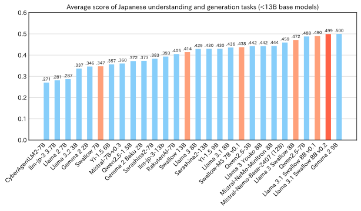
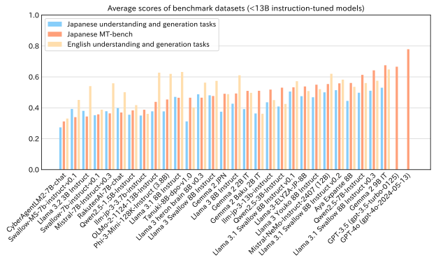

Hugging Face
- Llama 3.1 Swallow 8B: https://huggingface.co/tokyotech-llm/Llama-3.1-Swallow-8B-v0.1
- Llama 3.1 Swallow 8B Instruct: https://huggingface.co/tokyotech-llm/Llama-3.1-Swallow-8B-Instruct-v0.1
- Llama 3.1 Swallow 70B: https://huggingface.co/tokyotech-llm/Llama-3.1-Swallow-70B-v0.1
- Llama 3.1 Swallow 70B Instruct: https://huggingface.co/tokyotech-llm/Llama-3.1-Swallow-70B-Instruct-v0.1
NVIDIA NIM
- Llama 3.1 Swallow 8B Instruct: https://build.nvidia.com/institute-of-science-tokyo/llama-3-1-swallow-8b-instruct-v01
- Llama 3.1 Swallow 70B Instruct: https://build.nvidia.com/institute-of-science-tokyo/llama-3-1-swallow-70b-instruct-v01
The license for Llama 3.1 Swallow inherits from the Meta Llama 3.1 license. Additionally, for the use of the instruction-tuned models, Llama 3.1 Swallow 8B Instruct and Llama 3.1 Swallow 70B Instruct, users must not only comply with the Llama 3.1 License but also ensure that they do not violate the usage restrictions outlined in the Gemma Terms of Use. Provided the license and restrictions (applicable to the Instruct models only) are adhered to, research and commercial usage of these models are permitted.
The Swallow team is advancing research and development with the goal of creating large language models (LLMs) with strong Japanese language capabilities. This is to elucidate the mechanisms and methods behind constructing LLMs that exhibit high abilities of language understanding, generation, and coversation. In addition to evaluating prototype LLMs developed by the research team, we also conduct evaluation experiments on LLMs created by other companies and research institutions to explore the “recipe” for developing excellent LLMs. From April 2024 to October, we have conducted over 400 experiments.
The Swallow project aims to build general LLMs model that can be easily fine-tuned for specific applications when necessary, rather than improving performance on specific tasks. For the 2024 fiscal year, the Swallow project employs question-answering tasks to test common knowledge, language generation tasks such as automatic summarization and machine translation, exams, and tasks requiring logical reasoning such as math and code generation. These evaluations are conducted with 10 datasets for Japanese understanding and generation tasks, and 9 datasets for English understanding and generation tasks. Additionally, to measure Japanese conversational ability, we conduct evaluations using a Japanese MT-Bench with GPT-4 as the judge.
For all tasks, evaluation scores range from 0 (minimum) to 1 (maximum). Notably, our Japanese MT-Bench evaluation results are observed to be lower than those on external leaderboards, even when our scores are scaled up tenfold to a 10-point system. While many external leaderboards use GPT-4 (gpt-4-0613) as a judge, we use GPT-4 (gpt-4-1106-preview), which is thought to be the cause of the score differences. Our investigations revealed that although there is a notable discrepancy between our results and those of external leaderboards, the rankings of the models remain mostly unchanged. Therefore, due to the substantial number of completed evaluations, we have chosen to continue with the version of GPT-4.
For more details on the evaluation, please refer to the Japanese LLM Evaluation.
8B Base
Since the performance of LLMs tends to increase with the number of parameters, it is essential to compare models of similar scale to evaluate the effectiveness of a model’s design recipe. However, comparing models of different scales can help users make informed choices, so we compared the performance of Llama 3.1 Swallow 8B against LLMs with fewer than 13B parameters. Below is a graph showing the average scores for Japanese understanding and generation tasks, sorted in descending order for base models with 13B parameters or fewer.

The average score for Japanese understanding and generation tasks with Llama 3.1 Swallow 8B is 0.4905, representing an increase of 1.88 points from the previous Llama 3 Swallow 8B version’s score of 0.4717, marking the highest score among open LLMs under 8B parameters. Additionally, Llama 3.1 8B achieved an average score of 0.4359, indicating a 5.46-point improvement in Japanese understanding and generation tasks through continual pre-training. Compared to Swallow 7B (released in December 2023), Swallow-MS 7B v0.1 (released in March 2024), and Llama 3 Swallow (released in July 2024), Llama 3.1 Swallow shows a steady increase in average scores.
Looking beyond the Swallow models, Qwen2.5 7B and Gemma 2 9B also demonstrate impressive performance. These models are multilingual, making it notable that they perform well even without being specialized for Japanese. There is a nominal 1B parameter difference between Qwen2.5 7B and Llama 3.1 Swallow 8B, which highlights Qwen2.5 7B’s impressive capabilities. However, if we consider decimal precision, Qwen2.5 7B has 7.6B parameters, while Llama 3.1 Swallow 8B has 8.0B, meaning the actual size difference is only 0.4B, which may change this impression. Gemma 2 9B is the strongest among this class of models. However, since it has 9.2B parameters, Llama 3.1 Swallow 8B competes well despite a 1.2B parameter disadvantage.
We visualized the scores of these three models on language understanding and generation tasks in Japanese and English using a radar chart. This chart reveals that Qwen2.5 excels in tasks involving mathematics (MGSM and GSM8K), general knowledge (JMMLU and MMLU), and code generation (JHumanEval and HumanEval), while Llama 3.1 Swallow is particularly strong in Japanese knowledge tasks (NIILC) and Japanese language generation tasks (XL-Sum and WMT20 en-ja).
8B Instruct
Similarly, the graph below shows the average scores for Japanese understanding and generation tasks, Japanese MT-bench, and English understanding and generation tasks for major instruction-tuned models with 13B parameters or fewer. In this graph, the models are arranged by average scores on Japanese understanding and generation tasks.

Llama 3.1 Swallow 8B Instruct achieved an average score of 0.5055 on Japanese understanding and generation tasks, a 1.50-point increase from instruction tuning. This also marks the highest score among open LLMs under 8B parameters. Additionally, the average score of Llama 3.1 Swallow 8B Instruct on the Japanese MT-bench was 0.5327, up 5.61 points from the previous version, Llama 3 Swallow 8B Instruct, which scored 0.4766. Furthermore, Llama 3 Swallow 8B Instruct often responded in English to prompts in Japanese, whereas Llama 3.1 Swallow 8B Instruct now responds in Japanese. When examining the percentage of Japanese characters in Japanese MT-bench responses, Llama 3 Swallow 8B Instruct was at 54.6%, while Llama 3.1 Swallow 8B Instruct increased to 68.2% (given that Japanese MT-bench responses include programming code, a Japanese character ratio around 70% is considered normal). With these improvements, we highly recommend using Llama 3.1 Swallow Instruct as it has evolved significantly as an instruction-tuned model.
Looking beyond Swallow, both Qwen2.5 7B and Gemma 2 9B stand out, similar to their performance as base models. Notably, Gemma 2 9B’s average score on the Japanese MT-bench (0.6753) surpasses the average score of GPT-3.5 (gpt-3.5-turbo-0125) at 0.6661, showcasing remarkable performance for this class of LLMs. Additionally, Llama-3-ELYZA-JP-8B and Llama 3 Youko 8B Instruct are also based on the Llama 3 series. They performed slightly higher on Japanese MT-bench scores but slightly lower on Japanese understanding and generation tasks compared to Llama 3.1 Swallow 8B Instruct. The performance differences between these models are minor, so it is best to try them out and choose the one that suits your needs (though Llama 3.1 Swallow offers broader usage because of the Llama 3.1 license).
70B Base
Next, we analyze the performance of the Llama 3.1 Swallow 70B base model. The graph below shows the major base models with 20B parameters or more, ranked by their average scores on Japanese understanding and generation tasks.
The average score for Japanese understanding and generation tasks with Llama 3.1 Swallow 70B is 0.5932, falling short of Qwen-2.5 72B’s score of 0.6232. Additionally, this score is nearly identical to the previous version, Llama 3 Swallow 70B, which scored 0.5934, suggesting that performance has not improved as much as we anticipated. One factor contributing to this outcome may be the emphasis on maintaining English capabilities during the continual pre-training.
The table below summarizes the average scores on Japanese and English understanding and generation tasks for Llama 3 and Llama 3 Swallow, as well as Llama 3.1 and Llama 3.1 Swallow, before and after continual pre-training. While the Llama 3 Swallow saw a decrease of 1.56 points in English understanding and generation scores, Llama 3.1 Swallow 70B experienced an increase of 1.46 points. This suggests that during the continual pre-training for Llama 3.1 Swallow 70B, the effort to maintain English performance may have led to a plateau in Japanese performance.
When constructing Llama 3.1 Swallow, we conducted validation experiments with the 8B model to find an optimal balance between Japanese and English performance and used this data to determine the composition of training data. However, as English performance actually increased in the 70B model, it may be necessary to adjust the corpus composition according to model scale (larger models like the 70B may be less prone to forgetting English). In any case, these results, which show an improvement in English performance, provide intriguing insights into how to build robust LLMs strong in both Japanese and English.
| Evaluation Task | Llama 3 70B | Llama 3 Swallow 70B | Llama 3.1 70B | Llama 3.1 Swallow 70B |
|---|---|---|---|---|
| Japanese understanding & Generation | 0.5682 | 0.5934 (+0.0252) | 0.5662 | 0.5932 (+0.0270) |
| English understanding & Generation | 0.6905 | 0.6749 (-0.0156) | 0.6748 | 0.6894 (+0.0146) |
Aside from Swallow, the standout models are Qwen2.5 72B and Gemma 2 27B. Despite being a multilingual model, Qwen2.5 72B achieved the highest score in this class with 0.6232. Although not shown in the graph above, the previous version, Qwen2 72B, scored 0.5937, showing steady improvement in version 2.5. Gemma 2 27B also performed remarkably well, surpassing larger models like the 35B and 47B Mixture-of-Expert (MoE) models and standing on par with models in the 70B class despite its smaller parameter number.
70B Instruct
Finally, we analyze the performance of the Llama 3.1 Swallow 70B Instruct. The graph below shows the average scores on Japanese understanding and generation tasks, Japanese MT-bench, and English understanding and generation tasks for major base models with 20B parameters or more. In this graph, the models are arranged by average scores on Japanese understanding and generation tasks.

The average Japanese MT-bench score for Llama 3.1 Swallow 70B Instruct is 0.6547, a 7.38-point increase from the previous Llama 3 Swallow 70B score of 0.5809. With the 8B results, this demonstrates that the instruction tuning of Llama 3.1 Swallow has proven effective. However, the Japanese understanding and generation task scores for Llama 3.1 70B (before continual pre-training) and Llama 3.1 Swallow 70B (after continual pre-training) are 0.5945 and 0.5887, respectively, showing no noticeable improvement from continual pre-training. This was unexpected for the Swallow team, but examining the breakdown of scores for each task (below) reveals the reason. The areas where Llama 3.1 Swallow 70B Instruct underperforms compared to Llama 3.1 70B Instruct are in code generation tasks (HumanEval and JHumanEval), while it performs slightly better in Japanese question-answering tasks (NIILC). A comparison between Llama 3.1 70B Base and Llama 3.1 70B Instruct shows that scores on HumanEval and JHumanEval improved with instruction tuning, suggesting that there may be room for improvement in Swallow’s instruction tuning for code generation.

Looking at other models beyond Swallow, it’s clear that Qwen2.5 72B Instruct demonstrates dialogue performance on the Japanese MT-bench comparable to GPT-4o (gpt-4o-2024-05-13). Additionally, Llama 3 Youko 70B Instruct, Gemma 27B IT, and Llama-3.1-70B-Japanese-Instruct-2407 also achieve high scores on Japanese MT-bench. The Swallow team is exploring ways to achieve higher scores on MT-bench, though it is possible that some recent models may be overfitting to the MT-bench. With the significant performance improvements of Japanese open LLMs, it may be time to incorporate human evaluations (Chatbot Arena: Chiang et al., 2024) or increase question difficulty (Arena-Hard: Li et al., 2024).
Llama 3.1 Swallow is constructed following these steps:
- Llama 3.1 Swallow base model: Continual pre-training (Fujii et al., 2024) is conducted on the Llama 3.1 8B and 70B base models (without vocabulary expansion).
- Llama 3.1 Swallow instruction-tuned Model: Supervised fine-tuning (SFT) is applied to the Llama 3.1 Swallow base model.
Swallow Corpus Version 2
For the continual pre-training of Llama 3.1 Swallow, we created a Japanese web corpus (Swallow Corpus Version 2) by extracting and refining Japanese text from the entire archives of Common Crawl (94 snapshots collected between 2013 and 2023, roughly 254.7 billion pages). Swallow Corpus Version 2 involved downloading these 254.7 billion pages, extracting around 8.3 billion pages identified to be in Japanese (roughly 12 trillion Japanese characters). The proportion of Japanese web pages in the Common Crawl was about 3.2%. This dataset is approximately four times the size of Swallow Corpus Version 1 (Okazaki et al., 2024) used for training Llama 3 Swallow (as measured by the total number of web pages used in corpus construction).
In Swallow Corpus Version 2, the corpus construction process was modified to facilitate the selection of text data suitable for LLM training. Common Crawl often revisits the same website at different times and may include similar content across different sites due to minor edits or reposting. To prevent models from memorizing data, it is essential to avoid repeatedly training on the same text. Therefore, a deduplication process is applied to the pre-training corpus, removing redundant text. This involves identifying sets of similar pages among billions, requiring substantial processing time and memory. Deduplication is thus a major challenge in corpus construction for pre-training.
As the number of web pages increases, so do the time and memory needed for deduplication. Thus, it is common to first filter (remove low-quality pages and select high-quality pages) to reduce the number of pages before deduplication. However, this process requires deduplication to be redone each time the filtering criteria are adjusted. To allow flexibility in experimenting with filtering methods, Swallow Corpus Version 2 performs deduplication first. Although this increases the necessary time and memory for deduplication, the Swallow team completed deduplication across all Japanese pages over about a month. The resulting Japanese web corpus after deduplication comprises 1.9 billion pages (3.2 trillion characters).
Selection of Educationally Valuable Texts
In the previous version, Llama 3 Swallow, efforts were made to improve Japanese knowledge-related tasks such as question answering (NIILC) and machine translation (WMT20) by carefully blending the pre-training datasets. However, no significant improvement was observed on general knowledge tasks (JMMLU), which became a challenge for the Swallow project. Thus, inspired by recent research (FineWeb-Edu (Penedo et al., 2024), DataComp-LM (Li et al., 2024), Dolma 1.7 (Ai2, 2024)), Llama 3.1 Swallow adopted an approach of carefully selecting small amounts of “educational” text to enhance performance on general knowledge tasks.
Specifically, Japanese Wikipedia articles in academic fields like STEM and social sciences were considered examples of “educational” text. About 60,000 such documents were selected as positive examples to train a FastText classifier for educational text. This classifier achieved over 99% accuracy on the validation dataset, effectively identifying documents similar to academic Wikipedia articles with high precision. Additionally, since FastText classifiers run efficiently on CPUs, it is a lightweight classifier that scales to the size of Swallow Corpus Version 2.
With this classifier, quality filtering could be performed independently of the heuristic rules (such as the proportion of Hiragana characters) used in Swallow Corpus Version 1. The team verified the effectiveness of these heuristics, retaining only the appropriate ones and combining them with the classifier for quality filtering. This approach not only removed low-quality documents but also aimed to extract more “educational” documents.
Examples of Discontinual Rules
- Length of the longest sentence in the text (texts were removed if they contained sentences that were too long)
- Proportion of repeated n-grams (texts were removed if the proportion was high)
Examples of Rules Retained
- Average length of sentences in the text (texts were removed if the length was too high or too low)
- Proportion of Hiragana in the text (texts were removed if the proportion was too low)
To evaluate these efforts, ablation experiments were conducted before constructing Llama 3.1 Swallow. The results showed that the introduction of the classifier and adjustments to the heuristic rules improved performance on multiple Japanese tasks, including general knowledge (JMMLU) and translation (WMT20). Notably, combining heuristics with the classifier achieved the highest performance, demonstrating the effectiveness of extracting “educational” Japanese text.
However, arithmetic reasoning (MGSM) showed a negative impact. This issue was mitigated by adding a specific mathematical dataset (Cosmopedia) during the training of Llama 3.1 Swallow, so it is not expected to be a problem in the actual continual pre-training process.
| Experimental Pattern | JCom. | JEMHopQA | NIILC | JSQuAD | XLSum | MGSM | WMT-20 (en-ja) | WMT-20 (ja-en) | JMMLU | JHumanEval |
|---|---|---|---|---|---|---|---|---|---|---|
| Traditional Heuristics | 88.6 | 45.6 | 56.1 | 89.1 | 19.7 | 34.4 | 26.1 | 17.8 | 45.7 | 22.3 |
| Combination of Traditional Heuristics and Classifier | 88.5 | 53.4 | 59.5 | 89.2 | 19.7 | 27.2 | 28.0 | 18.5 | 46.4 | 23.1 |
| Combination of Adjusted Heuristics and Classifier | 89.1 | 55.3 | 60.7 | 89.5 | 20.9 | 28.4 | 29.7 | 22.6 | 48.4 | 24.1 |
Ablation Experiment Settings
- Continual pre-training on 50B tokens of Japanese corpus based on Llama 3 8B
- The Japanese corpus consisted of Japanese Wikipedia (1.69B tokens) and Swallow Corpus (48.31B tokens), with only the quality filtering settings for the Swallow Corpus modified
- In experiments using the classifier, only the top 10% of texts by classifier score were extracted from the Swallow Corpus after applying heuristic rules
During the construction of Llama 3.1 Swallow, improvements exceeding 8% on general knowledge (JMMLU) for the 8B model compared to Llama 3 Swallow confirmed the effectiveness of selecting educationally valuable texts.
Maintaining English Proficiency During Continual Pre-training
When enhancing the Japanese capabilities of an LLM through continual pre-training, a decline in the model’s original capabilities — primarily its English understanding and generation abilities — is often observed. For example, continual pre-training from Llama 2 7B to Swallow 7B resulted in a 6.1-point drop in the average score for English understanding and generation tasks, while the continual pre-training from Llama 2 70B to Swallow 70B saw a 2.7-point decrease. While it is essential to anticipate some loss in English proficiency when teaching Japanese to an LLM, maintaining these original abilities is desirable for tasks like arithmetic reasoning, general knowledge, and code generation, as these skills transfer well from English to Japanese.
In developing Llama 3.1 Swallow, we carefully selected training data to improve performance on general knowledge and code generation tasks. We decided to use datasets like DataComp-baseline, which showed effectiveness in general knowledge tasks, and The Stack v2, which demonstrated positive results in code generation tasks. Preliminary experiments also explored the optimal blend of these datasets. As a result, continual pre-training from Llama 3.1 8B to Llama 3.1 Swallow 8B led to only a 0.6-point decrease in the average English understanding and generation score, while training from Llama 3.1 70B to Llama 3.1 Swallow 70B even resulted in a 1.4-point improvement.
The radar chart below illustrates the scores on English understanding and generation tasks before and after continual pre-training for Swallow 7B and Llama 3.1 Swallow 8B. While Swallow 7B shows noticeable declines across tasks, Llama 3.1 Swallow 8B demonstrates minimal score reduction. Insights into dataset selection and composition like this are vital for exploring methods to build LLMs strong in both Japanese and English.
The corpora used for continual pre-training are as follows:
- Cosmopedia
- Dclm-baseline-1.0 (Li et al., 2024)
- English Wikipedia
- Japanese Wikipedia
- Laboro ParaCorpus
- Swallow Corpus Version 2
- The Stack v2 (Lozhkov et al., 2024)
Enhancing Conversational Ability with Synthetic Data
Improving LLM’s conversational ability hinges on instruction tuning with diverse and complex prompts, as well as useful and fluent responses. Ideally, it would involve collecting real-world user prompts and manually providing suitable responses, but this process is extremely time-consuming and labor-intensive. To build training data more quickly and affordably, the research team opted to imitate responses from existing high-performance LLMs. Specifically, prompts from the LMSYS-Chat-1M dataset, which contains human-computer interaction data, were translated into Japanese. Then, responses were automatically generated using Llama 3.1 405B Instruct, an open LLM with top-tier conversational ability. Following the methodology used in Llama 3.1 construction, multiple responses were generated, and the best response was selected through automatic scoring by Llama 3.1 70B Instruct. Additionally, quality was improved by identifying and removing duplicate prompts, template-based prompts, and unnecessary repetitive responses.
The datasets used for instruction tuning are as follows:
Japanese Instruction Tuning Data
lmsys-chat-1m-synth-ja-wo-pii-and-template-instructions: A Japanese single-turn instruction-response dataset synthesized from lmsys-chat-1m (Zhang et al., 2024). The first-turn human prompts were translated into Japanese using DeepL (machine translation), and responses to the translated prompts were generated with Llama-3.1-405B-Instruct. Afterward, rejection sampling (n=6) was performed using Llama-3.1-70B-Instruct for automated scoring. Dialogues containing personally identifiable information (PII), template-based prompts, and duplicate prompts were removed.filtered-magpie-ultra-ja: The Japanese version of thefiltered-magpie-ultra-endataset, translated into Japanese using gemma-2-27b-it.gemma-magpie: A Japanese question-answer dataset synthesized from scratch using gemma-2-27b-it. Prompts were generated with topic-specific prompts, and assistant responses were generated for these prompts. Filtering was then applied based on heuristic rules for quality and length.
English Instruction Tuning Data
lmsys-chat-1m-synth-en-wo-pii-and-template-instructions: Responses to the original English prompts from lmsys-chat-1m were generated following the same method used for the Japanese dataset,lmsys-chat-1m-synth-ja-wo-pii-and-template-instructions. Unlike the Japanese version, rejection sampling was omitted.filtered-magpie-ultra-en: A subset of the MAGPIE instruction tuning data, created by Llama-3.1-405B-Instruct, following the MAGPIE methodology (Xu et al., 2024) magpie-ultra. Specifically, only examples rated above average were selected.
Improving Processing Speed in Distributed Parallel Training
In training LLMs, distributed parallel training using multiple GPUs is essential. Increasing the number of GPUs improves overall processing speed, but communication between GPUs can become a bottleneck, leading to decreased processing speed (computational efficiency) per GPU. To mitigate this, we introduced a method to finely interweave computation and communication, helping to maintain computational efficiency. Additionally, we revisited the distributed parallel training configurations to find the optimal settings for training Llama 3.1 Swallow. Below shows the processing speed per GPU (TFLOP/s), or computational efficiency, during continual pre-training for Llama 3.1 Swallow. As shown in the graph, with a micro-batch size of 2, we confirmed that even when training the 8B model of Llama 3.1 Swallow on 128 GPUs (16 nodes) using A100 (40GB), computational efficiency (184.9 TFLOP/s) equal to or exceeding that of training on 8 GPUs (1 node) can be achieved.

Furthermore, increasing the number of GPUs occasionally led to unintended training interruptions, which negatively affected the training efficiency of LLMs. In the continual pre-training of Llama 3.1 Swallow, adjustments to communication settings significantly reduced such interruptions, enhancing the utilization efficiency of computational resources.
References
- Wei-Lin Chiang, Lianmin Zheng, Ying Sheng, Anastasios Nikolas Angelopoulos, Tianle Li, Dacheng Li, Banghua Zhu, Hao Zhang, Michael I. Jordan, Joseph E. Gonzalez and Ion Stoica. 2024. Chatbot Arena: An Open Platform for Evaluating LLMs by Human Preference. The Forty-first International Conference on Machine Learning (ICML), July 2024.
- Kazuki Fujii, Taishi Nakamura, Mengsay Loem, Hiroki Iida, Masanari Ohi, Kakeru Hattori, Hirai Shota, Sakae Mizuki, Rio Yokota, and Naoaki Okazaki. Continual Pre-Training for Cross-Lingual LLM Adaptation: Enhancing Japanese Language Capabilities. In Proceedings of the First Conference on Language Modeling (COLM), October 2024.
- Jeffrey Li, Alex Fang, Georgios Smyrnis, Maor Ivgi, Matt Jordan, Samir Yitzhak Gadre, Hritik Bansal, Etash Kumar Guha, Sedrick Keh, Kushal Arora, Saurabh Garg, Rui Xin, Niklas Muennighoff, Reinhard Heckel, Jean Mercat, Mayee Chen, Suchin Gururangan, Mitchell Wortsman, Alon Albalak, Yonatan Bitton, Marianna Nezhurina, Amro Abbas, Cheng-Yu Hsieh, Dhruba Ghosh, Josh Gardner, Maciej Kilian, Hanlin Zhang, Rulin Shao, Sarah M. Pratt, Sunny Sanyal, Gabriel Ilharco, Giannis Daras, Kalyani Marathe, Aaron Gokaslan, Jieyu Zhang, Khyathi Raghavi Chandu, Thao Nguyen, Igor Vasiljevic, Sham M. Kakade, Shuran Song, Sujay Sanghavi, Fartash Faghri, Sewoong Oh, Luke Zettlemoyer, Kyle Lo, Alaaeldin El-Nouby, Hadi Pouransari, Alexander Toshev, Stephanie Wang, Dirk Groeneveld, Luca Soldaini, Pang Wei Koh, Jenia Jitsev, Thomas Kollar, Alexandros G. Dimakis, Yair Carmon, Achal Dave, Ludwig Schmidt and Vaishaal Shankar. 2024. DataComp-LM: In search of the next generation of training sets for language models. arXiv:2406.11794.
- Tianle Li, Wei-Lin Chiang, Evan Frick, Lisa Dunlap, Tianhao Wu, Banghua Zhu, Joseph E. Gonzalez and Ion Stoica. 2024. From Crowdsourced Data to High-Quality Benchmarks: Arena-Hard and BenchBuilder Pipeline. arXiv:2406.11939.
- Naoaki Okazaki, Kakeru Hattori, Hirai Shota, Hiroki Iida, Masanari Ohi, Kazuki Fujii, Taishi Nakamura, Mengsay Loem, Rio Yokota, and Sakae Mizuki. Building a Large Japanese Web Corpus for Large Language Models. In Proceedings of the First Conference on Language Modeling (COLM), October 2024.
- Zhangchen Xu, Fengqing Jiang, Luyao Niu, Yuntian Deng, Radha Poovendran, Yejin Choi, Bill Yuchen Lin. 2024. Magpie: Alignment Data Synthesis from Scratch by Prompting Aligned LLMs with Nothing. arXiv:2406.08464.
- Lianmin Zheng, Wei-Lin Chiang, Ying Sheng, Tianle Li, Siyuan Zhuang, Zhanghao Wu, Yonghao Zhuang, Zhuohan Li, Zi Lin, Eric Xing, Joseph E. Gonzalez, Ion Stoica and Hao Zhang. 2024. LMSYS-Chat-1M: A Large-Scale Real-World LLM Conversation Dataset. The Twelfth International Conference on Learning Representations (ICLR), May 2024.
The research and development of the large language model Swallow has been supported by the AIST Project “Research and Development on Generative AI Foundation Models in the Physical Domain,” the “Core Integrated Technology Development for Next-Generation Artificial Intelligence and Robotics” project by the New Energy and Industrial Technology Development Organization (NEDO) (JPNP18002), specifically focusing on “Development of AI Application Technology for Decision Support in Design Risk Assessment Based on Expert Perspectives.” It is also supported by a project from the Ministry of Education, Culture, Sports, Science, and Technology (MEXT) aimed at “establishment of research and development centers to ensure the transparency and reliability of generative AI models”, along with other contributions. Additionally, data and insights developed by LLM-jp (LLM Study Group) were utilized for evaluating LLMs.